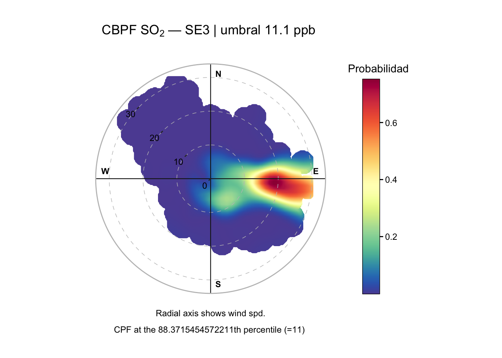
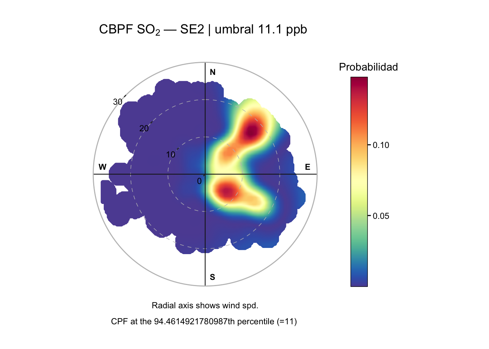
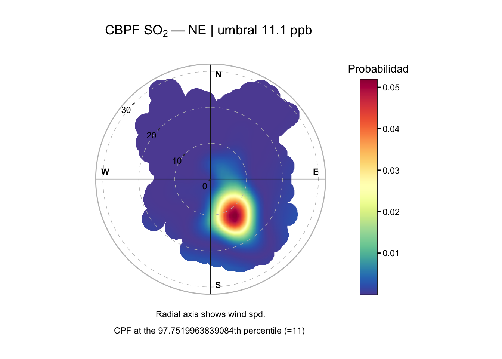

library(tidyverse)
library(lubridate)
library(splines)
library(broom)
library(sandwich)
library(lmtest)
library(pROC)
library(ResourceSelection)
library(emmeans)SIMA — Modelo integrado Omar + Sebas
Validación espacial, meteorológica y temporal de episodios de SO₂
Propósito del archivo
Este QMD integra en una sola secuencia reproducible dos líneas de trabajo complementarias:
- Validación espacial y meteorológica: comprobar que el patrón direccional de los episodios de SO₂ persiste al controlar por meteorología y que su magnitud puede cambiar entre estaciones.
- Validación temporal: comprobar que el patrón direccional no es un artefacto de la persistencia del SO₂ entre horas consecutivas.
La lógica confirmatoria es:
dirección → meteorología → diferencias entre estaciones → memoria temporal → modelo integrado → robustez → validación fuera de muestra.
El análisis es observacional. Los resultados permiten hablar de asociación espacial, meteorológica y temporal consistente con la hipótesis del proyecto, pero no de atribución causal definitiva a una fuente específica.
1. Preparación general
datos <- read_csv(
"baseee_SIMA_limpia_4est_8cont_2022_2025.csv",
locale = locale(encoding = "UTF-8"),
show_col_types = FALSE
)
cat("Dimensiones originales:", nrow(datos), "x", ncol(datos), "\n")Dimensiones originales: 132936 x 21 1.1 Variables comunes
rumbos <- c(
"N","NNE","NE","ENE","E","ESE","SE","SSE",
"S","SSO","SO","OSO","O","ONO","NO","NNO"
)
datos <- datos %>%
mutate(
fecha = ymd_hms(`Fecha y hora`),
Estacion = factor(Estacion, levels = c("SE3", "SE2", "NE", "GAR")),
sector = rumbos[((floor((WDR + 11.25) / 22.5)) %% 16) + 1],
sector = factor(sector, levels = rumbos),
Hora = hour(fecha),
Mes = month(fecha),
Año = year(fecha),
Hora_sin = sin(2 * pi * Hora / 24),
Hora_cos = cos(2 * pi * Hora / 24),
Mes_sin = sin(2 * pi * Mes / 12),
Mes_cos = cos(2 * pi * Mes / 12)
)
# Umbral absoluto común a las cuatro estaciones
umbral_ep <- quantile(datos$SO2, 0.95, na.rm = TRUE)
datos <- datos %>%
mutate(
episodio = as.integer(SO2 > umbral_ep),
sector_E = factor(
if_else(sector %in% c("ENE", "E", "ESE"), "Este", "Resto"),
levels = c("Resto", "Este")
)
)
cat("Umbral P95 global:", round(umbral_ep, 2), "ppb\n")Umbral P95 global: 11.1 ppb1.2 Caracterización inicial
resumen_estaciones <- datos %>%
group_by(Estacion) %>%
summarise(
n = n(),
episodios = sum(episodio, na.rm = TRUE),
tasa_pct = 100 * mean(episodio, na.rm = TRUE),
P50 = median(SO2, na.rm = TRUE),
P99 = quantile(SO2, 0.99, na.rm = TRUE),
razon_P99_P50 = P99 / P50,
.groups = "drop"
) %>%
mutate(across(where(is.numeric), ~ round(.x, 2)))
print(resumen_estaciones)# A tibble: 4 × 7
Estacion n episodios tasa_pct P50 P99 razon_P99_P50
<fct> <dbl> <dbl> <dbl> <dbl> <dbl> <dbl>
1 SE3 33977 3951 11.6 4.4 55.3 12.6
2 SE2 33240 1841 5.54 3.8 27.8 7.32
3 NE 33185 746 2.25 3.8 15.1 3.97
4 GAR 32534 49 0.15 3.3 7.4 2.242. Evidencia direccional base en SE3
Este bloque reproduce la especificación direccional de 16 rumbos. La pregunta es si, aun controlando por velocidad del viento, hora y mes, ciertos rumbos presentan una asociación mayor con los episodios.
d_se3 <- datos %>%
filter(Estacion == "SE3") %>%
mutate(
sector = relevel(sector, ref = "N"),
dia = as.Date(fecha)
)
mod_dir_16 <- glm(
episodio ~
sector +
ns(WSR, 3) +
Hora_sin + Hora_cos +
Mes_sin + Mes_cos,
data = d_se3,
family = binomial
)
or_dir_16 <- tidy(mod_dir_16) %>%
filter(str_detect(term, "^sector")) %>%
transmute(
Rumbo = str_remove(term, "^sector"),
OR = exp(estimate),
IC_inf = exp(estimate - 1.96 * std.error),
IC_sup = exp(estimate + 1.96 * std.error),
p = p.value
) %>%
arrange(desc(OR))
print(or_dir_16, n = 15)# A tibble: 15 × 5
Rumbo OR IC_inf IC_sup p
<chr> <dbl> <dbl> <dbl> <dbl>
1 E 6.12 4.73 7.92 3.97e-43
2 ESE 2.58 2.00 3.33 4.38e-13
3 ENE 1.98 1.51 2.62 1.20e- 6
4 SSE 1.53 1.17 2.01 1.93e- 3
5 SE 1.51 1.17 1.96 1.55e- 3
6 S 1.14 0.826 1.56 4.30e- 1
7 NE 1.08 0.791 1.47 6.34e- 1
8 NNE 1.06 0.750 1.50 7.43e- 1
9 SO 0.830 0.533 1.29 4.09e- 1
10 SSO 0.781 0.514 1.19 2.46e- 1
11 OSO 0.543 0.328 0.899 1.75e- 2
12 ONO 0.251 0.154 0.409 2.94e- 8
13 O 0.238 0.128 0.444 6.20e- 6
14 NNO 0.231 0.153 0.348 2.35e-12
15 NO 0.0775 0.0446 0.135 1.19e-192.1 Significancia global y capacidad discriminante
mod_dir_nulo <- glm(
episodio ~ 1,
data = d_se3,
family = binomial
)
print(anova(mod_dir_nulo, mod_dir_16, test = "Chisq"))Analysis of Deviance Table
Model 1: episodio ~ 1
Model 2: episodio ~ sector + ns(WSR, 3) + Hora_sin + Hora_cos + Mes_sin +
Mes_cos
Resid. Df Resid. Dev Df Deviance Pr(>Chi)
1 33976 24426
2 33954 19809 22 4617.2 < 2.2e-16 ***
---
Signif. codes: 0 '***' 0.001 '**' 0.01 '*' 0.05 '.' 0.1 ' ' 1roc_dir <- roc(
d_se3$episodio,
fitted(mod_dir_16),
quiet = TRUE
)
cat("AUC modelo direccional de 16 rumbos:",
round(as.numeric(auc(roc_dir)), 3), "\n")AUC modelo direccional de 16 rumbos: 0.811 3. Comparación espacial: modelo conjunto flexible
La pregunta ya no es solamente si existe asociación con el sector oriental, sino si esa asociación y los controles temporales/meteorológicos se comportan igual en las cuatro estaciones.
d_conjunto <- datos %>%
select(
fecha, Estacion, episodio, sector_E,
WSR, Hora_sin, Hora_cos, Mes_sin, Mes_cos
) %>%
drop_na() %>%
mutate(
Estacion = factor(Estacion, levels = c("SE3", "SE2", "NE", "GAR")),
sector_E = factor(sector_E, levels = c("Resto", "Este"))
)3.1 Controles comunes vs controles específicos por estación
mod_conjunto_comun <- glm(
episodio ~
Estacion * sector_E +
ns(WSR, 3) +
Hora_sin + Hora_cos +
Mes_sin + Mes_cos,
data = d_conjunto,
family = binomial
)
mod_conjunto_flexible <- glm(
episodio ~
Estacion * (
sector_E +
ns(WSR, 3) +
Hora_sin + Hora_cos +
Mes_sin + Mes_cos
),
data = d_conjunto,
family = binomial
)
comparacion_flexibilidad <- tibble(
Modelo = c(
"Controles comunes",
"Controles específicos por estación"
),
AIC = c(
AIC(mod_conjunto_comun),
AIC(mod_conjunto_flexible)
),
BIC = c(
BIC(mod_conjunto_comun),
BIC(mod_conjunto_flexible)
)
) %>%
mutate(across(c(AIC, BIC), ~ round(.x, 1)))
print(comparacion_flexibilidad)# A tibble: 2 × 3
Modelo AIC BIC
<chr> <dbl> <dbl>
1 Controles comunes 40568. 40714.
2 Controles específicos por estación 40177 40530.3.2 ¿La asociación Este–Resto cambia entre estaciones?
mod_flexible_sin_interaccion_sector <- glm(
episodio ~
Estacion * (
ns(WSR, 3) +
Hora_sin + Hora_cos +
Mes_sin + Mes_cos
) +
sector_E,
data = d_conjunto,
family = binomial
)
prueba_interaccion_flexible <- anova(
mod_flexible_sin_interaccion_sector,
mod_conjunto_flexible,
test = "Chisq"
)
print(prueba_interaccion_flexible)Analysis of Deviance Table
Model 1: episodio ~ Estacion * (ns(WSR, 3) + Hora_sin + Hora_cos + Mes_sin +
Mes_cos) + sector_E
Model 2: episodio ~ Estacion * (sector_E + ns(WSR, 3) + Hora_sin + Hora_cos +
Mes_sin + Mes_cos)
Resid. Df Resid. Dev Df Deviance Pr(>Chi)
1 132903 40301
2 132900 40105 3 195.77 < 2.2e-16 ***
---
Signif. codes: 0 '***' 0.001 '**' 0.01 '*' 0.05 '.' 0.1 ' ' 1comparacion_interaccion <- tibble(
Modelo = c(
"Sin interacción Estación × sector",
"Con interacción Estación × sector"
),
AIC = c(
AIC(mod_flexible_sin_interaccion_sector),
AIC(mod_conjunto_flexible)
),
BIC = c(
BIC(mod_flexible_sin_interaccion_sector),
BIC(mod_conjunto_flexible)
)
) %>%
mutate(across(c(AIC, BIC), ~ round(.x, 1)))
print(comparacion_interaccion)# A tibble: 2 × 3
Modelo AIC BIC
<chr> <dbl> <dbl>
1 Sin interacción Estación × sector 40367. 40690
2 Con interacción Estación × sector 40177 40530.3.3 Contrastes Este vs Resto por estación
emm_sector <- emmeans(
mod_conjunto_flexible,
~ sector_E | Estacion
)
contrastes_estacion <- contrast(
emm_sector,
method = list("Este vs Resto" = c(-1, 1)),
adjust = "holm"
)
print(summary(contrastes_estacion, infer = TRUE))Estacion = SE3:
contrast estimate SE df asymp.LCL asymp.UCL z.ratio p.value
Este vs Resto 1.15968 0.0384 Inf 1.084 1.235 30.232 <0.0001
Estacion = SE2:
contrast estimate SE df asymp.LCL asymp.UCL z.ratio p.value
Este vs Resto 0.45832 0.0505 Inf 0.359 0.557 9.081 <0.0001
Estacion = NE:
contrast estimate SE df asymp.LCL asymp.UCL z.ratio p.value
Este vs Resto 0.00661 0.1120 Inf -0.212 0.226 0.059 0.9529
Estacion = GAR:
contrast estimate SE df asymp.LCL asymp.UCL z.ratio p.value
Este vs Resto 0.07134 0.3560 Inf -0.627 0.770 0.200 0.8413
Results are given on the log odds ratio (not the response) scale.
Confidence level used: 0.95 Interpretación esperada: si la interacción es significativa y AIC/BIC favorecen el modelo flexible, no debe obligarse a que el efecto de dirección, WSR, hora y mes sea idéntico entre estaciones.
4. Extensión meteorológica en SE3
Este bloque incorpora las variables meteorológicas adicionales para comprobar si el patrón direccional persiste después de controlar por temperatura, humedad, presión, radiación y precipitación.
La selección se realiza con 2022–2024. El año 2025 queda fuera y se utiliza únicamente para validación temporal.
d_met_se3 <- datos %>%
filter(Estacion == "SE3") %>%
select(
fecha, Año, episodio, sector,
WSR, TOUT, RH, PRS, SR, RAINF,
Hora_sin, Hora_cos, Mes_sin, Mes_cos
) %>%
drop_na() %>%
mutate(
sector = factor(sector, levels = rumbos),
sector = relevel(sector, ref = "N"),
dia = as.Date(fecha)
)
d_met_tr <- d_met_se3 %>% filter(Año <= 2024)
d_met_te <- d_met_se3 %>% filter(Año == 2025)
cat("Train 2022-2024:", nrow(d_met_tr), "\n")Train 2022-2024: 25426 cat("Test 2025:", nrow(d_met_te), "\n")Test 2025: 8551 4.1 Modelo meteorológico completo
formula_met_completa <- episodio ~
sector +
ns(WSR, 3) +
ns(TOUT, 3) +
ns(RH, 3) +
ns(PRS, 3) +
ns(SR, 3) +
log1p(RAINF) +
Hora_sin + Hora_cos +
Mes_sin + Mes_cos
formula_met_minima <- episodio ~
sector +
Hora_sin + Hora_cos +
Mes_sin + Mes_cos
mod_met_completo_tr <- glm(
formula_met_completa,
data = d_met_tr,
family = binomial
)4.2 Selección AIC y BIC
mod_met_aic_tr <- step(
mod_met_completo_tr,
scope = list(
lower = formula_met_minima,
upper = formula_met_completa
),
direction = "backward",
k = 2,
trace = 0
)
mod_met_bic_tr <- step(
mod_met_completo_tr,
scope = list(
lower = formula_met_minima,
upper = formula_met_completa
),
direction = "backward",
k = log(nobs(mod_met_completo_tr)),
trace = 0
)
comparacion_seleccion_meteo <- tibble(
Modelo = c("Completo", "AIC", "BIC"),
AIC = c(
AIC(mod_met_completo_tr),
AIC(mod_met_aic_tr),
AIC(mod_met_bic_tr)
),
BIC = c(
BIC(mod_met_completo_tr),
BIC(mod_met_aic_tr),
BIC(mod_met_bic_tr)
),
Parametros = c(
length(coef(mod_met_completo_tr)),
length(coef(mod_met_aic_tr)),
length(coef(mod_met_bic_tr))
)
) %>%
mutate(across(c(AIC, BIC), ~ round(.x, 1)))
print(comparacion_seleccion_meteo)# A tibble: 3 × 4
Modelo AIC BIC Parametros
<chr> <dbl> <dbl> <int>
1 Completo 13525. 13818. 36
2 AIC 13524. 13809 35
3 BIC 13524. 13809 35cat("\nFórmula BIC meteorológica:\n")
Fórmula BIC meteorológica:print(formula(mod_met_bic_tr))episodio ~ sector + ns(WSR, 3) + ns(TOUT, 3) + ns(RH, 3) + ns(PRS,
3) + ns(SR, 3) + Hora_sin + Hora_cos + Mes_sin + Mes_cos4.3 ¿La dirección aporta información después de la meteorología?
Se compara el modelo meteorológico seleccionado con el mismo modelo eliminando solamente el bloque de dirección.
mod_met_sin_direccion_tr <- update(
mod_met_bic_tr,
. ~ . - sector
)
cat("=== LRT: meteorología seleccionada, con vs sin dirección ===\n")=== LRT: meteorología seleccionada, con vs sin dirección ===print(
anova(
mod_met_sin_direccion_tr,
mod_met_bic_tr,
test = "Chisq"
)
)Analysis of Deviance Table
Model 1: episodio ~ ns(WSR, 3) + ns(TOUT, 3) + ns(RH, 3) + ns(PRS, 3) +
ns(SR, 3) + Hora_sin + Hora_cos + Mes_sin + Mes_cos
Model 2: episodio ~ sector + ns(WSR, 3) + ns(TOUT, 3) + ns(RH, 3) + ns(PRS,
3) + ns(SR, 3) + Hora_sin + Hora_cos + Mes_sin + Mes_cos
Resid. Df Resid. Dev Df Deviance Pr(>Chi)
1 25406 14647
2 25391 13454 15 1192.7 < 2.2e-16 ***
---
Signif. codes: 0 '***' 0.001 '**' 0.01 '*' 0.05 '.' 0.1 ' ' 15. Validación temporal del modelo meteorológico en 2025
Para hacer la predicción de 2025 se reajusta en 2022–2024 la especificación elegida por BIC.
formula_met_final <- formula(mod_met_bic_tr)
mod_met_final_tr <- glm(
formula_met_final,
data = d_met_tr,
family = binomial
)
mod_base_16_tr <- glm(
episodio ~
sector +
ns(WSR, 3) +
Hora_sin + Hora_cos +
Mes_sin + Mes_cos,
data = d_met_tr,
family = binomial
)
p_base_2025 <- predict(
mod_base_16_tr,
newdata = d_met_te,
type = "response"
)
p_met_2025 <- predict(
mod_met_final_tr,
newdata = d_met_te,
type = "response"
)
metricas_binarias <- function(y, p) {
tibble(
AUC = as.numeric(auc(roc(y, p, quiet = TRUE))),
Brier = mean((p - y)^2)
)
}
validacion_meteo_2025 <- bind_rows(
metricas_binarias(d_met_te$episodio, p_base_2025) %>%
mutate(Modelo = "Dirección + WSR + tiempo", .before = 1),
metricas_binarias(d_met_te$episodio, p_met_2025) %>%
mutate(Modelo = "Meteorología ampliada", .before = 1)
) %>%
mutate(
AUC = round(AUC, 3),
Brier = round(Brier, 4)
)
print(validacion_meteo_2025)# A tibble: 2 × 3
Modelo AUC Brier
<chr> <dbl> <dbl>
1 Dirección + WSR + tiempo 0.789 0.104
2 Meteorología ampliada 0.794 0.1066. Diagnóstico de dependencia temporal residual
La meteorología puede explicar parte de la variación, pero no necesariamente la memoria temporal del contaminante. Este diagnóstico conecta directamente el trabajo meteorológico con el modelo de rezagos.
mod_base_16_misma_muestra <- glm(
episodio ~
sector +
ns(WSR, 3) +
Hora_sin + Hora_cos +
Mes_sin + Mes_cos,
data = d_met_se3,
family = binomial
)
mod_met_final <- glm(
formula_met_final,
data = d_met_se3,
family = binomial
)acf_residuo_real <- function(modelo, datos_modelo, etiqueta,
lags = c(1, 2, 3, 6, 12, 24, 48)) {
resid_base <- tibble(
fecha = datos_modelo$fecha,
residuo = residuals(modelo, type = "deviance")
)
map_dfr(lags, function(k) {
anterior <- resid_base %>%
transmute(
fecha = fecha + hours(k),
residuo_anterior = residuo
)
pares <- resid_base %>%
transmute(
fecha,
residuo_actual = residuo
) %>%
inner_join(anterior, by = "fecha")
tibble(
Modelo = etiqueta,
Rezago_horas = k,
N_pares = nrow(pares),
Autocorrelacion = if (nrow(pares) > 2) {
cor(
pares$residuo_actual,
pares$residuo_anterior,
use = "complete.obs"
)
} else {
NA_real_
}
)
})
}
acf_meteo <- bind_rows(
acf_residuo_real(
mod_base_16_misma_muestra,
d_met_se3,
"Base: dirección + WSR + tiempo"
),
acf_residuo_real(
mod_met_final,
d_met_se3,
"Meteorología ampliada"
)
)
print(
acf_meteo %>%
mutate(Autocorrelacion = round(Autocorrelacion, 3)),
n = Inf
)# A tibble: 14 × 4
Modelo Rezago_horas N_pares Autocorrelacion
<chr> <dbl> <int> <dbl>
1 Base: dirección + WSR + tiempo 1 33607 0.484
2 Base: dirección + WSR + tiempo 2 33468 0.253
3 Base: dirección + WSR + tiempo 3 33389 0.134
4 Base: dirección + WSR + tiempo 6 33268 0.042
5 Base: dirección + WSR + tiempo 12 33142 0.078
6 Base: dirección + WSR + tiempo 24 33072 0.165
7 Base: dirección + WSR + tiempo 48 32922 0.106
8 Meteorología ampliada 1 33607 0.471
9 Meteorología ampliada 2 33468 0.242
10 Meteorología ampliada 3 33389 0.13
11 Meteorología ampliada 6 33268 0.05
12 Meteorología ampliada 12 33142 0.06
13 Meteorología ampliada 24 33072 0.151
14 Meteorología ampliada 48 32922 0.09 Lectura clave: si persiste una autocorrelación importante en lag 1, la meteorología adicional no sustituye un tratamiento explícito de la memoria del SO₂.
7. Construcción correcta de rezagos horarios
Los rezagos se calculan sobre una rejilla horaria completa. Esto evita tratar como consecutivas dos mediciones separadas por una hora faltante.
se3_grid <- datos %>%
filter(Estacion == "SE3") %>%
select(
fecha, SO2, episodio, sector, sector_E,
WSR, TOUT, RH, PRS, SR, RAINF
) %>%
arrange(fecha) %>%
complete(
fecha = seq(
min(fecha, na.rm = TRUE),
max(fecha, na.rm = TRUE),
by = "hour"
)
) %>%
arrange(fecha) %>%
mutate(
Año = year(fecha),
Hora = hour(fecha),
Mes = month(fecha),
Hora_sin = sin(2 * pi * Hora / 24),
Hora_cos = cos(2 * pi * Hora / 24),
Mes_sin = sin(2 * pi * Mes / 12),
Mes_cos = cos(2 * pi * Mes / 12),
SO2_lag1 = lag(SO2, 1),
SO2_lag2 = lag(SO2, 2),
SO2_lag3 = lag(SO2, 3),
SO2_lag6 = lag(SO2, 6),
SO2_lag12 = lag(SO2, 12),
SO2_lag24 = lag(SO2, 24),
dia = as.Date(fecha)
)8. Modelo temporal con rezagos de SO₂
Este bloque reproduce la idea de Sebastián: preguntar si el sector Este continúa aportando información después de conocer el SO₂ de horas anteriores.
d_lags <- se3_grid %>%
select(
fecha, Año, dia, episodio, sector_E,
WSR,
Hora_sin, Hora_cos, Mes_sin, Mes_cos,
SO2_lag1, SO2_lag2, SO2_lag3,
SO2_lag6, SO2_lag12, SO2_lag24
) %>%
drop_na()
formula_lag_base <- episodio ~
sector_E +
ns(WSR, 3) +
Hora_sin + Hora_cos +
Mes_sin + Mes_cos
formula_lag_completa <- update(
formula_lag_base,
. ~ . +
SO2_lag1 + SO2_lag2 + SO2_lag3 +
SO2_lag6 + SO2_lag12 + SO2_lag24
)
mod_lag_base <- glm(
formula_lag_base,
data = d_lags,
family = binomial
)
mod_lag_completo <- glm(
formula_lag_completa,
data = d_lags,
family = binomial
)8.1 Selección BIC de los rezagos
# Para continuidad con el análisis previo:
formula_lag_minima <- formula_lag_base
mod_lag_bic <- step(
mod_lag_completo,
scope = list(
lower = formula_lag_minima,
upper = formula_lag_completa
),
direction = "backward",
k = log(nobs(mod_lag_completo)),
trace = 0
)
cat("Fórmula temporal BIC:\n")Fórmula temporal BIC:print(formula(mod_lag_bic))episodio ~ sector_E + ns(WSR, 3) + Hora_sin + Hora_cos + Mes_sin +
Mes_cos + SO2_lag1 + SO2_lag2 + SO2_lag12 + SO2_lag24cat("\nLRT: sin lags vs con lags seleccionados\n")
LRT: sin lags vs con lags seleccionadosprint(
anova(
mod_lag_base,
mod_lag_bic,
test = "Chisq"
)
)Analysis of Deviance Table
Model 1: episodio ~ sector_E + ns(WSR, 3) + Hora_sin + Hora_cos + Mes_sin +
Mes_cos
Model 2: episodio ~ sector_E + ns(WSR, 3) + Hora_sin + Hora_cos + Mes_sin +
Mes_cos + SO2_lag1 + SO2_lag2 + SO2_lag12 + SO2_lag24
Resid. Df Resid. Dev Df Deviance Pr(>Chi)
1 31017 19157
2 31013 13970 4 5187.7 < 2.2e-16 ***
---
Signif. codes: 0 '***' 0.001 '**' 0.01 '*' 0.05 '.' 0.1 ' ' 18.2 ¿Sobrevive el sector Este?
print(
tidy(mod_lag_bic) %>%
filter(term == "sector_EEste") %>%
mutate(
OR = exp(estimate),
IC_inf = exp(estimate - 1.96 * std.error),
IC_sup = exp(estimate + 1.96 * std.error)
) %>%
select(term, estimate, OR, IC_inf, IC_sup, p.value)
)# A tibble: 1 × 6
term estimate OR IC_inf IC_sup p.value
<chr> <dbl> <dbl> <dbl> <dbl> <dbl>
1 sector_EEste 1.21 3.34 3.03 3.68 7.87e-1299. MODELO INTEGRADO NUEVO: meteorología + memoria temporal + dirección
Esta es la pieza que une directamente ambos trabajos.
Se construye sobre la misma muestra para que AIC, BIC y las pruebas de razón de verosimilitud sean comparables.
La especificación confirmatoria combina:
- sector Este/Resto;
- meteorología retenida en el trabajo meteorológico: WSR, TOUT, RH, PRS y SR;
- hora y mes cíclicos;
- rezagos seleccionados en el trabajo temporal: 1, 2, 12 y 24 horas.
RAINF no se fuerza porque en la selección meteorológica previa no fue retenida.
d_integrado <- se3_grid %>%
select(
fecha, Año, dia, episodio, sector_E,
WSR, TOUT, RH, PRS, SR,
Hora_sin, Hora_cos, Mes_sin, Mes_cos,
SO2_lag1, SO2_lag2, SO2_lag12, SO2_lag24
) %>%
drop_na() %>%
mutate(
sector_E = factor(sector_E, levels = c("Resto", "Este"))
)
d_int_tr <- d_integrado %>% filter(Año <= 2024)
d_int_te <- d_integrado %>% filter(Año == 2025)
cat("Muestra integrada total:", nrow(d_integrado), "\n")Muestra integrada total: 31745 cat("Train 2022-2024:", nrow(d_int_tr), "\n")Train 2022-2024: 23563 cat("Test 2025:", nrow(d_int_te), "\n")Test 2025: 8182 9.1 Cuatro modelos anidados sobre exactamente las mismas filas
f_base_int <- episodio ~
sector_E +
ns(WSR, 3) +
Hora_sin + Hora_cos +
Mes_sin + Mes_cos
f_meteo_int <- episodio ~
sector_E +
ns(WSR, 3) +
ns(TOUT, 3) +
ns(RH, 3) +
ns(PRS, 3) +
ns(SR, 3) +
Hora_sin + Hora_cos +
Mes_sin + Mes_cos
f_lags_int <- episodio ~
sector_E +
ns(WSR, 3) +
Hora_sin + Hora_cos +
Mes_sin + Mes_cos +
SO2_lag1 + SO2_lag2 + SO2_lag12 + SO2_lag24
f_full_int <- episodio ~
sector_E +
ns(WSR, 3) +
ns(TOUT, 3) +
ns(RH, 3) +
ns(PRS, 3) +
ns(SR, 3) +
Hora_sin + Hora_cos +
Mes_sin + Mes_cos +
SO2_lag1 + SO2_lag2 + SO2_lag12 + SO2_lag24
m_base_int_tr <- glm(f_base_int, data = d_int_tr, family = binomial)
m_meteo_int_tr <- glm(f_meteo_int, data = d_int_tr, family = binomial)
m_lags_int_tr <- glm(f_lags_int, data = d_int_tr, family = binomial)
m_full_int_tr <- glm(f_full_int, data = d_int_tr, family = binomial)
comparacion_integrada_train <- tibble(
Modelo = c(
"Base",
"Meteorología ampliada",
"Lags SO2",
"Meteorología + lags"
),
AIC = c(
AIC(m_base_int_tr),
AIC(m_meteo_int_tr),
AIC(m_lags_int_tr),
AIC(m_full_int_tr)
),
BIC = c(
BIC(m_base_int_tr),
BIC(m_meteo_int_tr),
BIC(m_lags_int_tr),
BIC(m_full_int_tr)
)
) %>%
mutate(across(c(AIC, BIC), ~ round(.x, 1)))
print(comparacion_integrada_train)# A tibble: 4 × 3
Modelo AIC BIC
<chr> <dbl> <dbl>
1 Base 13874. 13946.
2 Meteorología ampliada 13201. 13370.
3 Lags SO2 10066. 10171.
4 Meteorología + lags 9844. 10046.9.2 Pruebas que demuestran complementariedad
¿Los rezagos aportan después de controlar meteorología?
cat("=== LRT: meteorología vs meteorología + lags ===\n")=== LRT: meteorología vs meteorología + lags ===print(
anova(
m_meteo_int_tr,
m_full_int_tr,
test = "Chisq"
)
)Analysis of Deviance Table
Model 1: episodio ~ sector_E + ns(WSR, 3) + ns(TOUT, 3) + ns(RH, 3) +
ns(PRS, 3) + ns(SR, 3) + Hora_sin + Hora_cos + Mes_sin +
Mes_cos
Model 2: episodio ~ sector_E + ns(WSR, 3) + ns(TOUT, 3) + ns(RH, 3) +
ns(PRS, 3) + ns(SR, 3) + Hora_sin + Hora_cos + Mes_sin +
Mes_cos + SO2_lag1 + SO2_lag2 + SO2_lag12 + SO2_lag24
Resid. Df Resid. Dev Df Deviance Pr(>Chi)
1 23542 13158.8
2 23538 9794.2 4 3364.6 < 2.2e-16 ***
---
Signif. codes: 0 '***' 0.001 '**' 0.01 '*' 0.05 '.' 0.1 ' ' 1¿La meteorología adicional aporta después de controlar la memoria del SO₂?
cat("=== LRT: lags vs meteorología + lags ===\n")=== LRT: lags vs meteorología + lags ===print(
anova(
m_lags_int_tr,
m_full_int_tr,
test = "Chisq"
)
)Analysis of Deviance Table
Model 1: episodio ~ sector_E + ns(WSR, 3) + Hora_sin + Hora_cos + Mes_sin +
Mes_cos + SO2_lag1 + SO2_lag2 + SO2_lag12 + SO2_lag24
Model 2: episodio ~ sector_E + ns(WSR, 3) + ns(TOUT, 3) + ns(RH, 3) +
ns(PRS, 3) + ns(SR, 3) + Hora_sin + Hora_cos + Mes_sin +
Mes_cos + SO2_lag1 + SO2_lag2 + SO2_lag12 + SO2_lag24
Resid. Df Resid. Dev Df Deviance Pr(>Chi)
1 23550 10039.9
2 23538 9794.2 12 245.69 < 2.2e-16 ***
---
Signif. codes: 0 '***' 0.001 '**' 0.01 '*' 0.05 '.' 0.1 ' ' 1¿El sector Este sigue aportando después de controlar AMBAS cosas?
m_full_sin_sector_tr <- update(
m_full_int_tr,
. ~ . - sector_E
)
cat("=== LRT: modelo integrado con vs sin sector Este ===\n")=== LRT: modelo integrado con vs sin sector Este ===print(
anova(
m_full_sin_sector_tr,
m_full_int_tr,
test = "Chisq"
)
)Analysis of Deviance Table
Model 1: episodio ~ ns(WSR, 3) + ns(TOUT, 3) + ns(RH, 3) + ns(PRS, 3) +
ns(SR, 3) + Hora_sin + Hora_cos + Mes_sin + Mes_cos + SO2_lag1 +
SO2_lag2 + SO2_lag12 + SO2_lag24
Model 2: episodio ~ sector_E + ns(WSR, 3) + ns(TOUT, 3) + ns(RH, 3) +
ns(PRS, 3) + ns(SR, 3) + Hora_sin + Hora_cos + Mes_sin +
Mes_cos + SO2_lag1 + SO2_lag2 + SO2_lag12 + SO2_lag24
Resid. Df Resid. Dev Df Deviance Pr(>Chi)
1 23539 10196.0
2 23538 9794.2 1 401.8 < 2.2e-16 ***
---
Signif. codes: 0 '***' 0.001 '**' 0.01 '*' 0.05 '.' 0.1 ' ' 1Esta es la prueba central del modelo integrado. Si el contraste es significativo, el sector Este aporta información adicional incluso después de controlar simultáneamente por meteorología y memoria temporal del SO₂.
10. OR del sector Este con inferencia robusta agrupada por día
Se reajusta el modelo integrado sobre toda la muestra disponible para estimar la asociación final, y se recalcula la incertidumbre agrupando las observaciones por día.
m_full_int <- glm(
f_full_int,
data = d_integrado,
family = binomial
)
V_full_rob <- vcovCL(
m_full_int,
cluster = ~ dia
)
rob_full <- coeftest(
m_full_int,
vcov. = V_full_rob
)
b_E <- rob_full["sector_EEste", "Estimate"]
se_E <- rob_full["sector_EEste", "Std. Error"]
resultado_sector_integrado <- tibble(
beta = b_E,
OR = exp(b_E),
IC_inf = exp(b_E - 1.96 * se_E),
IC_sup = exp(b_E + 1.96 * se_E),
p_robusto = rob_full["sector_EEste", "Pr(>|z|)"]
)
print(
resultado_sector_integrado %>%
mutate(
across(c(beta, OR, IC_inf, IC_sup), ~ round(.x, 3)),
p_robusto = signif(p_robusto, 3)
)
)# A tibble: 1 × 5
beta OR IC_inf IC_sup p_robusto
<dbl> <dbl> <dbl> <dbl> <dbl>
1 1.22 3.38 3.06 3.74 1.88e-12811. Validación fuera de muestra 2025: comparación justa
Los cuatro modelos se entrenan con 2022–2024 y se evalúan sobre las mismas observaciones de 2025.
pred_base <- predict(
m_base_int_tr,
newdata = d_int_te,
type = "response"
)
pred_meteo <- predict(
m_meteo_int_tr,
newdata = d_int_te,
type = "response"
)
pred_lags <- predict(
m_lags_int_tr,
newdata = d_int_te,
type = "response"
)
pred_full <- predict(
m_full_int_tr,
newdata = d_int_te,
type = "response"
)
metricas_oos <- function(y, p, nombre) {
tibble(
Modelo = nombre,
AUC_2025 = as.numeric(auc(roc(y, p, quiet = TRUE))),
Brier_2025 = mean((p - y)^2)
)
}
validacion_integrada_2025 <- bind_rows(
metricas_oos(d_int_te$episodio, pred_base, "Base"),
metricas_oos(d_int_te$episodio, pred_meteo, "Meteorología"),
metricas_oos(d_int_te$episodio, pred_lags, "Lags"),
metricas_oos(d_int_te$episodio, pred_full, "Meteorología + lags")
) %>%
mutate(
AUC_2025 = round(AUC_2025, 3),
Brier_2025 = round(Brier_2025, 4)
)
print(validacion_integrada_2025)# A tibble: 4 × 3
Modelo AUC_2025 Brier_2025
<chr> <dbl> <dbl>
1 Base 0.761 0.108
2 Meteorología 0.768 0.110
3 Lags 0.897 0.0751
4 Meteorología + lags 0.896 0.076411.1 Sensibilidad y especificidad con corte definido en entrenamiento
corte_train <- mean(d_int_tr$episodio)
metricas_clasificacion <- function(y, p, corte, nombre) {
tab <- table(
Predicho = p > corte,
Real = y
)
# asegurar matriz 2 x 2
if (!all(c("FALSE", "TRUE") %in% rownames(tab)) ||
!all(c("0", "1") %in% colnames(tab))) {
return(
tibble(
Modelo = nombre,
Sensibilidad = NA_real_,
Especificidad = NA_real_
)
)
}
tibble(
Modelo = nombre,
Sensibilidad = tab["TRUE", "1"] / sum(tab[, "1"]),
Especificidad = tab["FALSE", "0"] / sum(tab[, "0"])
)
}
clasificacion_2025 <- bind_rows(
metricas_clasificacion(
d_int_te$episodio, pred_base, corte_train, "Base"
),
metricas_clasificacion(
d_int_te$episodio, pred_meteo, corte_train, "Meteorología"
),
metricas_clasificacion(
d_int_te$episodio, pred_lags, corte_train, "Lags"
),
metricas_clasificacion(
d_int_te$episodio, pred_full, corte_train, "Meteorología + lags"
)
) %>%
mutate(
Sensibilidad = round(Sensibilidad, 3),
Especificidad = round(Especificidad, 3)
)
print(clasificacion_2025)# A tibble: 4 × 3
Modelo Sensibilidad Especificidad
<chr> <dbl> <dbl>
1 Base 0.701 0.679
2 Meteorología 0.57 0.788
3 Lags 0.795 0.833
4 Meteorología + lags 0.734 0.87612. ¿Queda autocorrelación después del modelo integrado?
acf_integrado <- acf_residuo_real(
m_full_int,
d_integrado,
"Modelo integrado"
) %>%
mutate(
Autocorrelacion = round(Autocorrelacion, 3)
)
print(acf_integrado, n = Inf)# A tibble: 7 × 4
Modelo Rezago_horas N_pares Autocorrelacion
<chr> <dbl> <int> <dbl>
1 Modelo integrado 1 30840 0.137
2 Modelo integrado 2 30360 0.046
3 Modelo integrado 3 29988 0.035
4 Modelo integrado 6 29727 0.021
5 Modelo integrado 12 30446 0.013
6 Modelo integrado 24 29838 0.048
7 Modelo integrado 48 29088 0.033La comparación útil es:
- autocorrelación residual del modelo base;
- autocorrelación residual del modelo meteorológico;
- autocorrelación residual del modelo integrado.
Una reducción clara en los primeros rezagos apoyaría que el modelo integrado captura mejor la dependencia temporal.
13. Importancia incremental de los bloques
Este análisis cuantifica cuánto empeora el modelo cuando se elimina cada bloque, manteniendo los demás.
m_int_sin_sector <- update(
m_full_int,
. ~ . - sector_E
)
m_int_sin_meteo_extra <- update(
m_full_int,
. ~ . -
ns(TOUT, 3) -
ns(RH, 3) -
ns(PRS, 3) -
ns(SR, 3)
)
m_int_sin_lags <- update(
m_full_int,
. ~ . -
SO2_lag1 -
SO2_lag2 -
SO2_lag12 -
SO2_lag24
)
m_int_sin_tiempo <- update(
m_full_int,
. ~ . -
Hora_sin - Hora_cos -
Mes_sin - Mes_cos
)
comparar_bloque <- function(modelo_reducido, modelo_completo, nombre) {
chi2 <- modelo_reducido$deviance - modelo_completo$deviance
gl <- modelo_reducido$df.residual - modelo_completo$df.residual
tibble(
Bloque = nombre,
Delta_deviance = chi2,
gl = gl,
p = pchisq(chi2, gl, lower.tail = FALSE)
)
}
importancia_bloques_integrada <- bind_rows(
comparar_bloque(
m_int_sin_sector,
m_full_int,
"Sector Este/Resto"
),
comparar_bloque(
m_int_sin_meteo_extra,
m_full_int,
"Meteorología adicional: TOUT + RH + PRS + SR"
),
comparar_bloque(
m_int_sin_lags,
m_full_int,
"Memoria temporal: lags SO2"
),
comparar_bloque(
m_int_sin_tiempo,
m_full_int,
"Ciclicidad: hora + mes"
)
) %>%
arrange(desc(Delta_deviance)) %>%
mutate(
Delta_deviance = round(Delta_deviance, 1),
p = signif(p, 3)
)
print(importancia_bloques_integrada)# A tibble: 4 × 4
Bloque Delta_deviance gl p
<chr> <dbl> <int> <dbl>
1 Memoria temporal: lags SO2 4886. 4 0
2 Sector Este/Resto 600. 1 1.51e-132
3 Meteorología adicional: TOUT + RH + PRS + SR 282. 12 3.25e- 53
4 Ciclicidad: hora + mes 104. 4 1.59e- 2114. Sensibilidad al umbral de episodio
Esta verificación comprueba que la conclusión direccional no dependa exclusivamente de haber elegido P95.
sensibilidad_umbral <- map_dfr(
c(0.90, 0.95, 0.99),
function(q) {
u <- quantile(datos$SO2, q, na.rm = TRUE)
map_dfr(
levels(datos$Estacion),
function(est) {
d <- datos %>%
filter(Estacion == est) %>%
mutate(
y = as.integer(SO2 > u)
) %>%
drop_na(
y, sector_E, WSR,
Hora_sin, Hora_cos,
Mes_sin, Mes_cos
)
if (sum(d$y) < 30) {
return(
tibble(
Estacion = est,
OR = NA_real_,
IC_inf = NA_real_,
IC_sup = NA_real_
)
)
}
m <- glm(
y ~
sector_E +
ns(WSR, 3) +
Hora_sin + Hora_cos +
Mes_sin + Mes_cos,
data = d,
family = binomial
)
co <- tidy(m) %>%
filter(term == "sector_EEste")
tibble(
Estacion = est,
OR = exp(co$estimate),
IC_inf = exp(co$estimate - 1.96 * co$std.error),
IC_sup = exp(co$estimate + 1.96 * co$std.error)
)
}
) %>%
mutate(
Percentil = paste0("P", 100 * q),
Umbral_ppb = u,
.before = 1
)
}
)
print(
sensibilidad_umbral %>%
mutate(
across(c(Umbral_ppb, OR, IC_inf, IC_sup), ~ round(.x, 2))
),
n = Inf
)# A tibble: 12 × 6
Percentil Umbral_ppb Estacion OR IC_inf IC_sup
<chr> <dbl> <chr> <dbl> <dbl> <dbl>
1 P90 7.2 SE3 3.38 3.17 3.6
2 P90 7.2 SE2 1.43 1.33 1.53
3 P90 7.2 NE 1 0.89 1.13
4 P90 7.2 GAR 1.4 1.08 1.83
5 P95 11.1 SE3 3.19 2.96 3.44
6 P95 11.1 SE2 1.58 1.43 1.74
7 P95 11.1 NE 1.01 0.81 1.26
8 P95 11.1 GAR 1.08 0.54 2.16
9 P99 30.6 SE3 2.57 2.25 2.93
10 P99 30.6 SE2 1.75 1.37 2.24
11 P99 30.6 NE 0.86 0.3 2.5
12 P99 30.6 GAR NA NA NA 15. Falsación multi-contaminante
La lógica es comprobar si el patrón del sector Este es específico de SO₂ o aparece de la misma manera en otros contaminantes.
or_este_contaminante <- function(df, var) {
d <- df %>%
filter(!is.na(.data[[var]])) %>%
mutate(
y = as.integer(
.data[[var]] >
quantile(.data[[var]], 0.95, na.rm = TRUE)
)
) %>%
drop_na(
y, sector_E, WSR,
Hora_sin, Hora_cos,
Mes_sin, Mes_cos
)
if (sum(d$y) < 30) {
return(
tibble(
n = nrow(d),
eventos = sum(d$y),
OR = NA_real_,
IC_inf = NA_real_,
IC_sup = NA_real_
)
)
}
m <- glm(
y ~
sector_E +
ns(WSR, 3) +
Hora_sin + Hora_cos +
Mes_sin + Mes_cos,
data = d,
family = binomial
)
co <- tidy(m) %>%
filter(term == "sector_EEste")
tibble(
n = nrow(d),
eventos = sum(d$y),
OR = exp(co$estimate),
IC_inf = exp(co$estimate - 1.96 * co$std.error),
IC_sup = exp(co$estimate + 1.96 * co$std.error)
)
}
falsacion_multicontaminante <- map_dfr(
c("SO2", "NOX", "NO", "CO", "PM10", "PM2.5", "O3"),
function(v) {
or_este_contaminante(
filter(datos, Estacion == "SE3"),
v
) %>%
mutate(Contaminante = v, .before = 1)
}
) %>%
mutate(
across(c(OR, IC_inf, IC_sup), ~ round(.x, 2))
)
print(falsacion_multicontaminante)# A tibble: 7 × 6
Contaminante n eventos OR IC_inf IC_sup
<chr> <int> <int> <dbl> <dbl> <dbl>
1 SO2 33977 1699 2.66 2.39 2.95
2 NOX 33682 1684 0.22 0.17 0.28
3 NO 33451 1670 0.22 0.17 0.29
4 CO 31741 1571 1.05 0.92 1.2
5 PM10 33684 1658 0.5 0.43 0.58
6 PM2.5 30686 1507 0.59 0.51 0.68
7 O3 33697 1567 0.9 0.8 1.0216. Verificación independiente CBPF
Este bloque es opcional. Solo se ejecuta si openair está instalado.
if (requireNamespace("openair", quietly = TRUE)) {
d_oa <- datos %>%
rename(
date = fecha,
ws = WSR,
wd = WDR
)
pct_eq <- datos %>%
group_by(Estacion) %>%
summarise(
p = 100 * mean(SO2 <= umbral_ep, na.rm = TRUE),
.groups = "drop"
)
for (est in c("SE3", "SE2", "NE")) {
p_est <- pct_eq$p[pct_eq$Estacion == est]
print(
openair::polarPlot(
filter(d_oa, Estacion == est),
pollutant = "SO2",
statistic = "cpf",
percentile = p_est,
main = paste0(
"CBPF SO2 — ", est,
" | umbral ", round(umbral_ep, 1), " ppb"
),
key.title = "Probabilidad"
)
)
}
}





17. Duración de episodios
La duración ayuda a explicar por qué un promedio móvil de 24 horas puede amortiguar eventos agudos cortos.
d_se3_ep <- datos %>%
filter(Estacion == "SE3") %>%
arrange(fecha) %>%
mutate(
salto_h = as.numeric(
difftime(fecha, lag(fecha), units = "hours")
),
nuevo_bloque =
is.na(salto_h) |
salto_h != 1 |
episodio != lag(episodio),
bloque_id = cumsum(nuevo_bloque)
)
rachas <- d_se3_ep %>%
filter(episodio == 1) %>%
group_by(bloque_id) %>%
summarise(
duracion_h = n(),
inicio = min(fecha),
.groups = "drop"
)
cat("Número de rachas:", nrow(rachas), "\n")Número de rachas: 1561 cat("Duración mediana:", median(rachas$duracion_h), "h\n")Duración mediana: 2 hprint(
quantile(
rachas$duracion_h,
c(0.50, 0.75, 0.90, 0.95, 0.99)
)
)50% 75% 90% 95% 99%
2.0 3.0 5.0 6.0 8.4 18. Punto ciego de promedios móviles de 24 horas
Este bloque documenta por qué episodios horarios pueden no traducirse en categorías altas cuando se utiliza una ventana de promediación de 24 horas.
if (requireNamespace("zoo", quietly = TRUE)) {
base_movil <- datos %>%
select(Estacion, fecha, SO2) %>%
arrange(Estacion, fecha) %>%
group_by(Estacion) %>%
complete(
fecha = seq(
min(fecha),
max(fecha),
by = "hour"
)
) %>%
mutate(
suma_24 = zoo::rollsumr(
coalesce(SO2, 0),
k = 24,
fill = NA
),
val_24 = zoo::rollsumr(
!is.na(SO2),
k = 24,
fill = NA
),
so2_mm24 = if_else(
val_24 >= 18,
suma_24 / val_24,
NA_real_
)
) %>%
ungroup()
resumen_24h <- base_movil %>%
filter(!is.na(so2_mm24)) %>%
group_by(Estacion) %>%
summarise(
n = n(),
max_mm24 = max(so2_mm24),
p99_mm24 = quantile(so2_mm24, 0.99),
.groups = "drop"
) %>%
mutate(
across(c(max_mm24, p99_mm24), ~ round(.x, 2))
)
print(resumen_24h)
}# A tibble: 4 × 4
Estacion n max_mm24 p99_mm24
<fct> <int> <dbl> <dbl>
1 SE3 34116 59.3 26.0
2 SE2 33358 29.4 13.4
3 NE 33335 20.3 9.69
4 GAR 31901 9.68 6.0219. Matriz de sustento del proyecto
Esta tabla resume qué pregunta responde cada bloque. No sustituye la interpretación de los resultados; sirve como mapa de defensa.
matriz_sustento <- tribble(
~Pregunta, ~Metodo, ~Que_comprueba,
"¿Existe patrón direccional?",
"Logística de 16 rumbos",
"La probabilidad de episodio cambia según rumbo controlando WSR, hora y mes.",
"¿El patrón espacial es igual en todas las estaciones?",
"Modelo conjunto flexible + interacción Estación × sector",
"Permite que dirección, WSR y ciclos temporales tengan efectos distintos por estación.",
"¿La dirección sobrevive a otros factores meteorológicos?",
"Modelo meteorológico ampliado + AIC/BIC + LRT",
"Evalúa dirección controlando TOUT, RH, PRS, SR, WSR y precipitación candidata.",
"¿La meteorología elimina la memoria temporal?",
"Autocorrelación de residuos",
"Determina si todavía existe dependencia entre horas consecutivas.",
"¿El patrón direccional es solo persistencia del SO2?",
"Regresión logística con rezagos",
"Controla explícitamente la concentración de SO2 de horas anteriores.",
"¿Meteorología y memoria temporal son complementarias?",
"Modelo integrado",
"Compara bloques sobre la misma muestra y prueba cada contribución condicional a las demás.",
"¿La inferencia depende de asumir independencia horaria?",
"Errores estándar robustos agrupados por día",
"Corrige la incertidumbre ante dependencia dentro del día.",
"¿Generaliza a datos futuros?",
"Entrenamiento 2022-2024 / prueba 2025",
"Evalúa AUC y Brier fuera de muestra.",
"¿Depende del umbral P95?",
"Sensibilidad P90/P95/P99",
"Verifica estabilidad ante distintos niveles de severidad.",
"¿Es un patrón general de contaminación?",
"Falsación multi-contaminante + CBPF",
"Contrasta SO2 contra otros contaminantes y con una técnica direccional independiente.",
"¿Por qué los picos pueden quedar ocultos en métricas agregadas?",
"Duración de rachas + promedio móvil 24 h",
"Relaciona episodios cortos con amortiguación por ventanas de 24 horas."
)
print(matriz_sustento, n = Inf)# A tibble: 11 × 3
Pregunta Metodo Que_comprueba
<chr> <chr> <chr>
1 ¿Existe patrón direccional? Logís… La probabili…
2 ¿El patrón espacial es igual en todas las estaciones? Model… Permite que …
3 ¿La dirección sobrevive a otros factores meteorológicos? Model… Evalúa direc…
4 ¿La meteorología elimina la memoria temporal? Autoc… Determina si…
5 ¿El patrón direccional es solo persistencia del SO2? Regre… Controla exp…
6 ¿Meteorología y memoria temporal son complementarias? Model… Compara bloq…
7 ¿La inferencia depende de asumir independencia horaria? Error… Corrige la i…
8 ¿Generaliza a datos futuros? Entre… Evalúa AUC y…
9 ¿Depende del umbral P95? Sensi… Verifica est…
10 ¿Es un patrón general de contaminación? Falsa… Contrasta SO…
11 ¿Por qué los picos pueden quedar ocultos en métricas ag… Durac… Relaciona ep…20. Resumen automático del modelo integrado
resumen_final_integrado <- list(
comparacion_train = comparacion_integrada_train,
validacion_2025 = validacion_integrada_2025,
clasificacion_2025 = clasificacion_2025,
sector_este_robusto = resultado_sector_integrado,
importancia_bloques = importancia_bloques_integrada,
acf_integrado = acf_integrado
)
print(resumen_final_integrado)$comparacion_train
# A tibble: 4 × 3
Modelo AIC BIC
<chr> <dbl> <dbl>
1 Base 13874. 13946.
2 Meteorología ampliada 13201. 13370.
3 Lags SO2 10066. 10171.
4 Meteorología + lags 9844. 10046.
$validacion_2025
# A tibble: 4 × 3
Modelo AUC_2025 Brier_2025
<chr> <dbl> <dbl>
1 Base 0.761 0.108
2 Meteorología 0.768 0.110
3 Lags 0.897 0.0751
4 Meteorología + lags 0.896 0.0764
$clasificacion_2025
# A tibble: 4 × 3
Modelo Sensibilidad Especificidad
<chr> <dbl> <dbl>
1 Base 0.701 0.679
2 Meteorología 0.57 0.788
3 Lags 0.795 0.833
4 Meteorología + lags 0.734 0.876
$sector_este_robusto
# A tibble: 1 × 5
beta OR IC_inf IC_sup p_robusto
<dbl> <dbl> <dbl> <dbl> <dbl>
1 1.22 3.38 3.07 3.74 1.88e-128
$importancia_bloques
# A tibble: 4 × 4
Bloque Delta_deviance gl p
<chr> <dbl> <int> <dbl>
1 Memoria temporal: lags SO2 4886. 4 0
2 Sector Este/Resto 600. 1 1.51e-132
3 Meteorología adicional: TOUT + RH + PRS + SR 282. 12 3.25e- 53
4 Ciclicidad: hora + mes 104. 4 1.59e- 21
$acf_integrado
# A tibble: 7 × 4
Modelo Rezago_horas N_pares Autocorrelacion
<chr> <dbl> <int> <dbl>
1 Modelo integrado 1 30840 0.137
2 Modelo integrado 2 30360 0.046
3 Modelo integrado 3 29988 0.035
4 Modelo integrado 6 29727 0.021
5 Modelo integrado 12 30446 0.013
6 Modelo integrado 24 29838 0.048
7 Modelo integrado 48 29088 0.03321. Guardado reproducible
saveRDS(
list(
datos = datos,
mod_dir_16 = mod_dir_16,
mod_conjunto_flexible = mod_conjunto_flexible,
mod_met_bic_tr = mod_met_bic_tr,
mod_met_final = mod_met_final,
mod_lag_bic = mod_lag_bic,
m_full_int = m_full_int,
V_full_rob = V_full_rob,
validacion_integrada_2025 = validacion_integrada_2025,
clasificacion_2025 = clasificacion_2025,
importancia_bloques_integrada = importancia_bloques_integrada,
sensibilidad_umbral = sensibilidad_umbral,
falsacion_multicontaminante = falsacion_multicontaminante,
matriz_sustento = matriz_sustento
),
"objetos_SIMA_modelo_integrado.rds"
)
cat("Objetos integrados guardados en objetos_SIMA_modelo_integrado.rds\n")Objetos integrados guardados en objetos_SIMA_modelo_integrado.rds22. Interpretación para defensa
La secuencia correcta para defender el proyecto es:
- Primero se identificó el patrón direccional sin imponer de antemano cuál rumbo debía ser el relevante.
- Después se verificó espacialmente que la relación no debía forzarse a ser idéntica en todas las estaciones.
- Se añadieron controles meteorológicos para descartar que la asociación direccional fuera simplemente una consecuencia de temperatura, humedad, presión, radiación o velocidad del viento.
- El diagnóstico residual mostró que la meteorología no sustituye la memoria temporal, por lo que se incorporaron rezagos del propio SO₂.
- El modelo integrado prueba simultáneamente ambas explicaciones alternativas: condiciones meteorológicas y persistencia del contaminante.
- El efecto del sector Este debe interpretarse con errores estándar robustos por día y comprobarse fuera de muestra en 2025.
- Las pruebas de sensibilidad, falsación multi-contaminante y CBPF funcionan como evidencia independiente adicional.
La conclusión debe mantenerse en términos de asociación. Una persistencia del efecto direccional después de todos estos controles fortalece la hipótesis espacial del proyecto, pero no sustituye una atribución causal formal de fuente.